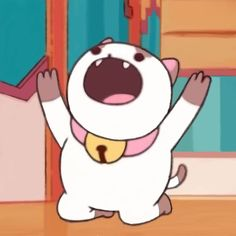
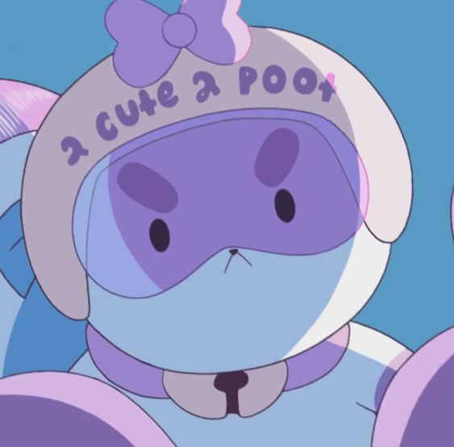
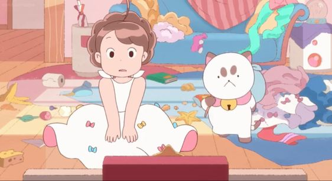

La vida de PuppyCat
PuppyCat es un singular personaje de la serie "Bee and PuppyCat". Se trata de un gato de pelaje blanco con características notables: cejas, orejas, patas y cola en tonos marrón claro. Lleva un collar rosa que destaca, con un pequeño cascabel dorado colgando. Su complexión regordeta y patas cortas, según Bee, pueden hacerlo parecer lento al correr. Además, su cola, que recuerda más a la de un perro, añade un toque peculiar a su apariencia. Lo más llamativo son sus cejas, que están dispuestas de tal manera que le confieren una expresión perpetuamente enojada o seria, a pesar de ser un macho, sus rasgos a veces lo hacen parecer hembra.
La historia de PuppyCat se entrelaza con la de Bee cuando un día cae sobre su cabeza. Desde entonces, su relación es muy similar a la de compañeros de cuarto, ya que él detesta que lo consideren una simple mascota. A pesar de que ocasionalmente puede mostrarse un tanto rudo con Bee, en realidad se preocupa profundamente por ella, un sentimiento que es mutuo. Cuando descubre que Bee no tiene trabajo ni dinero, se esfuerza por conseguirle un empleo temporal con Temp-bot.
A pesar de ciertos detalles que le molestan, como cuando Bee lo viste de manera adorable o le hace llevar un casco lindo, PuppyCat aprecia la amabilidad y los gestos de Bee. Disfrutan viendo la televisión juntos, lo que fortalece aún más su peculiar vínculo.
La historia de PuppyCat es mucho más intrigante de lo que parece a simple vista. Originalmente, era un cazador de dulces conocido como el Forajido Espacial y lideraba un grupo de caza recompensas llamado Team PuppyCat. Su vida cambió drásticamente cuando se enamoró de una Princesa Espacial. Esta princesa lo engañó para que los hechiceros lo sellaran, un acto que buscaba su encarcelamiento. Paradójicamente, el intento de conjuro de sellado resultó en una transformación involuntaria que lo convirtió en el ser que conocemos como PuppyCat, abandonando su antigua forma.
En resumen, PuppyCat es un personaje único, con una apariencia y una personalidad que desafían las expectativas, y su relación con Bee es una parte central de la serie.